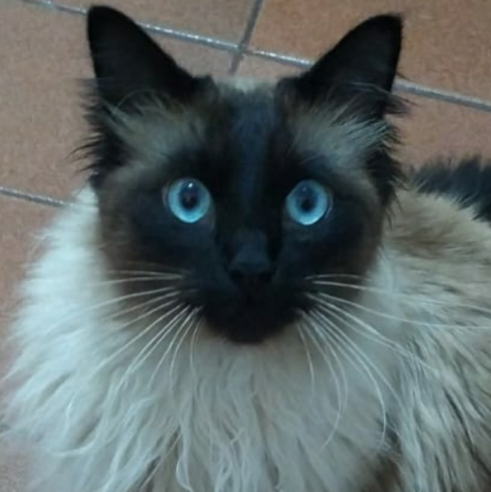
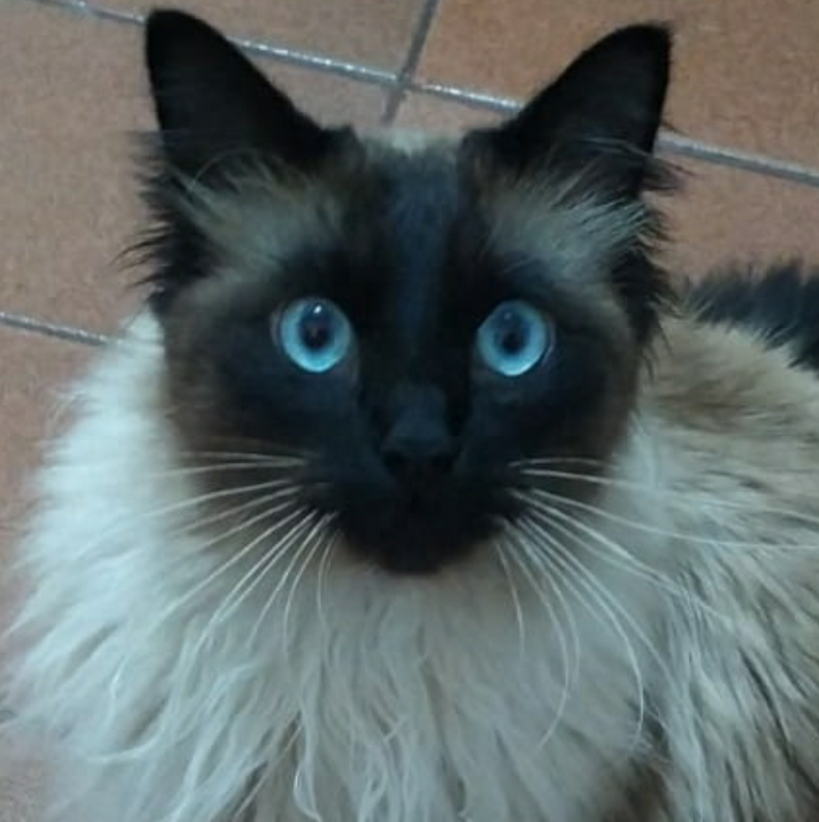

|  | Gary Gatito Oliveira da Silva |
|  | Gary Gatito Oliveira da Silva |
Nacionalidade: Brasileiro
Estado cívil: Solteiro
Idade: 2 anos
Gênero: Masculino
Endereço: Rua dos sachês, 111 - Vila da soneca - São Paulo-SP - Brasil
Desestressar os humanos através das minhas capacidades psíquicas de absorver e eliminar energias ruins.
Nas horas vagas gosto de dormir em posições acrobaticas com meus humanos, comer sachê, caçar insetos e observar aves.